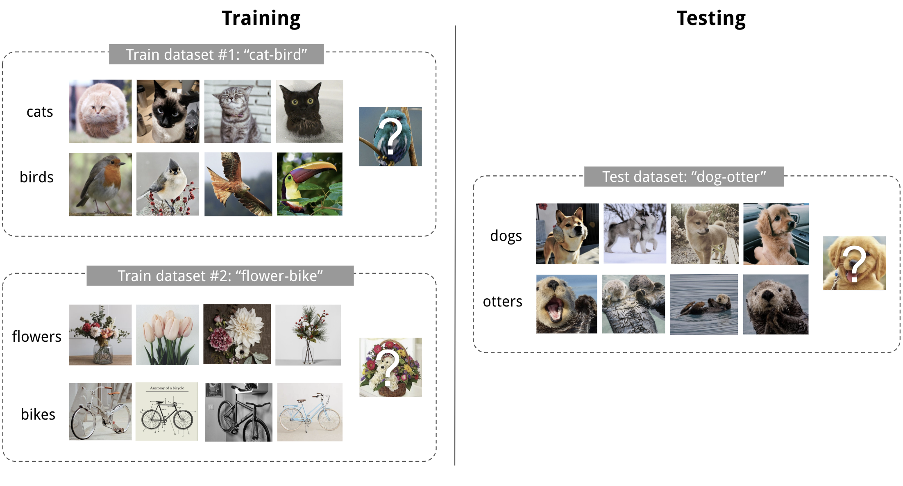
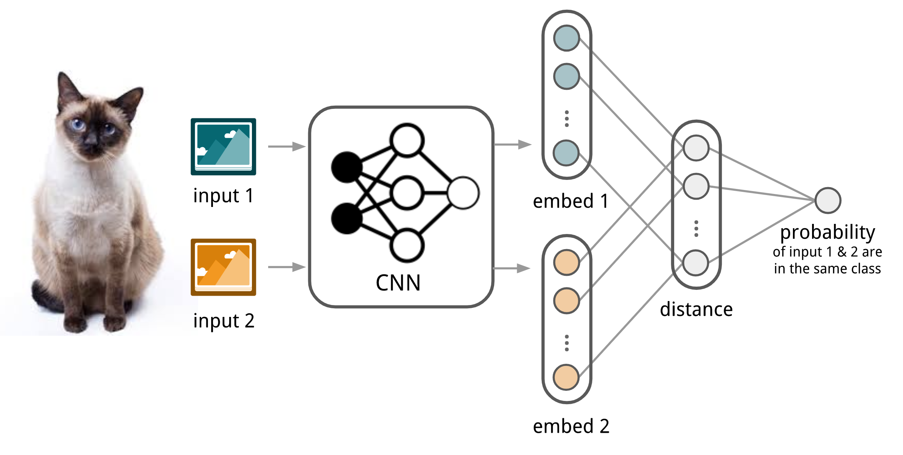
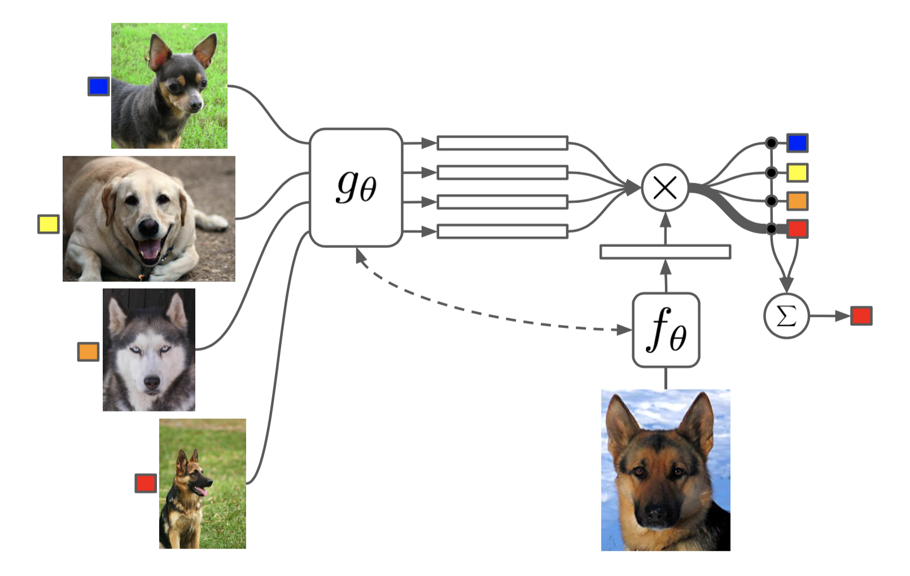
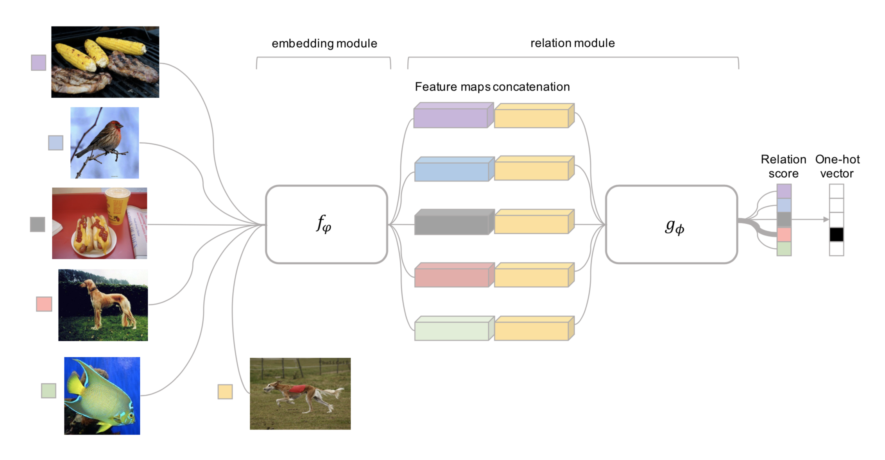
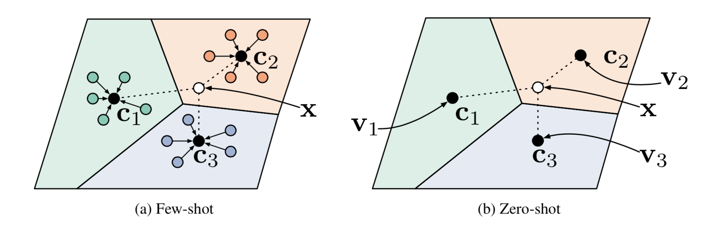
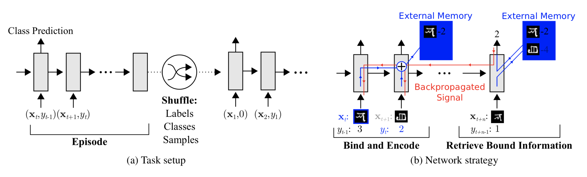
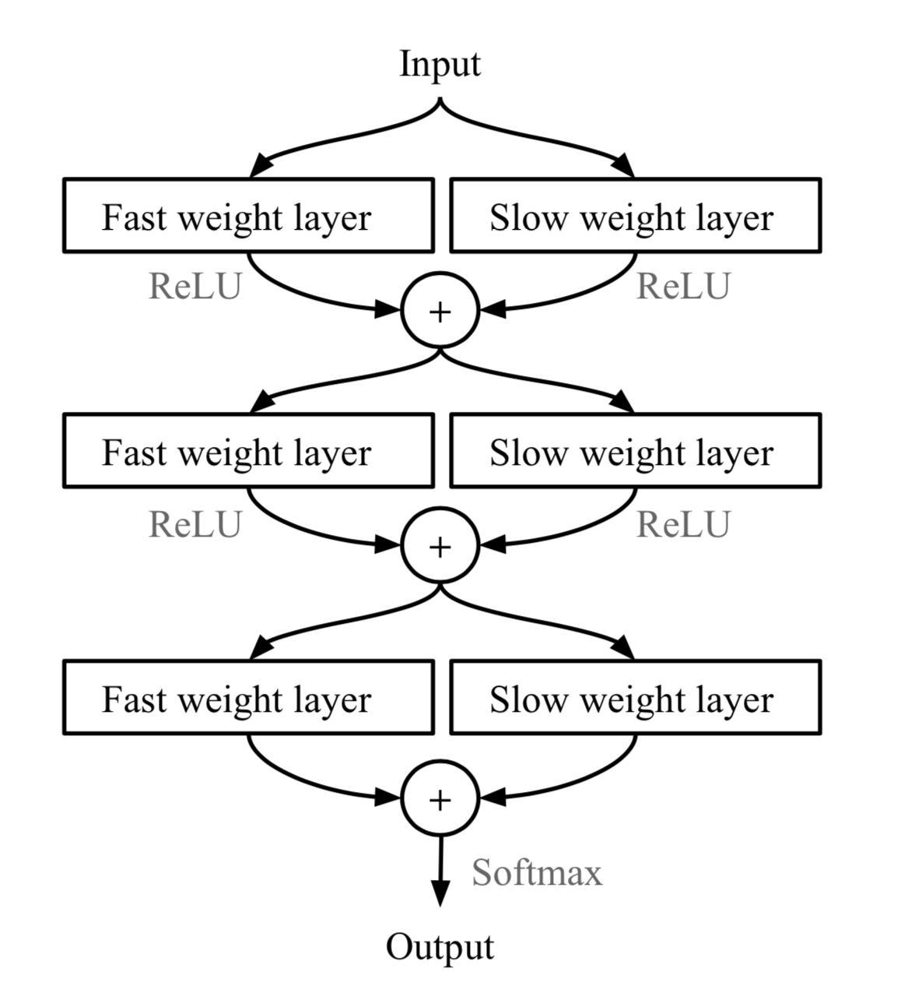
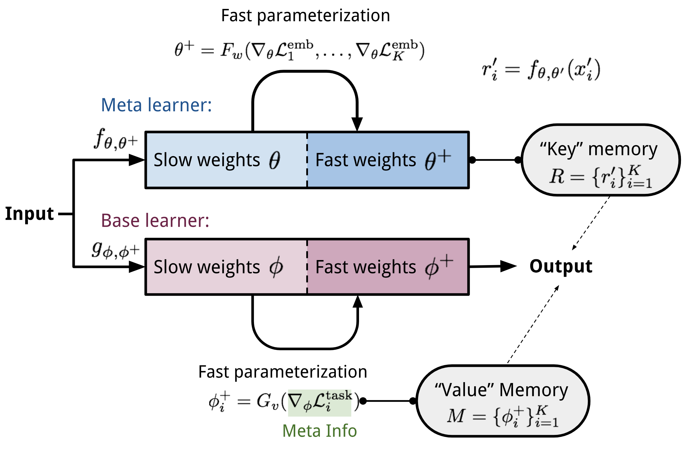
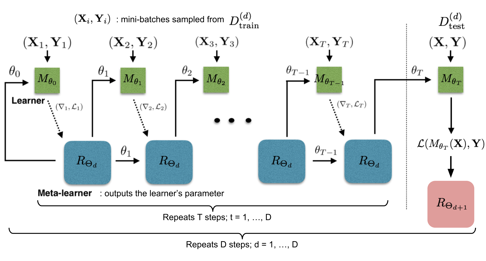
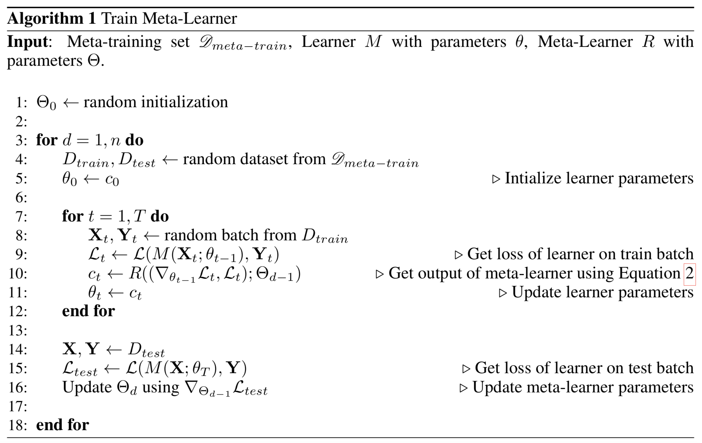

目录
- Define the Meta-Learning Problem A Simple View Training in the Same Way as Testing Learner and Meta-Learner Common Approaches
- Metric-Based Convolutional Siamese Neural Network Matching Networks Simple Embedding Full Context Embeddings Relation Network Prototypical Networks
- Model-Based Memory-Augmented Neural Networks MANN for Meta-Learning Addressing Mechanism for Meta-Learning Meta Networks Fast Weights Model Components Training Process
- Optimization-Based LSTM Meta-Learner Why LSTM? Model Setup MAML First-Order MAML Reptile The Optimization Assumption Reptile vs FOMAML
- Reference
[2019-10-01 更新：感谢 Tianhao，我们这篇文章已有 中文 译本！]
一个好的机器学习模型通常需要用大量样本进行训练。与此相反，人类学习新概念和技能的速度要快得多，也高效得多。仅见过几次猫和鸟的孩子就能很快把它们区分开来。会骑自行车的人很可能只需很少甚至无需演示就能迅速掌握骑摩托车的方法。我们是否有可能设计出具有类似特性的机器学习模型——仅用少量训练样本就能快速学习新概念和技能？这正是元学习试图解决的核心问题。
我们期望一个好的元学习模型能够很好地适应或泛化到训练过程中从未遇见过的新任务和新环境。这种适应过程本质上是一次小型学习会话，发生在测试阶段，但仅接触到有限的新任务配置。最终，适应后的模型能够完成新任务。这也是为什么元学习也被称为 learning to learn。
这些任务可以是任何定义明确的机器学习问题家族：监督学习、强化学习等。例如，下面是一些具体的元学习任务：
- 一个在非猫图像上训练的分类器，在看过少数几张猫的图片后，就能判断给定图像是否包含猫。
- 一个游戏机器人能够快速掌握一款新游戏。
- 一台微型机器人在测试时能在上坡表面完成指定任务，尽管它只在平坦表面环境中训练过。
定义元学习问题#
在这篇文章中，我们重点关注每个目标任务都是监督学习问题（如图像分类）的情况。关于强化学习问题的元学习（即“元强化学习”）已有大量有趣文献，但本文不做讨论。
一个简单的视角#
一个好的元学习模型应该在一系列学习任务上进行训练，并针对任务分布（包括可能未见过的任务）进行优化以获得最佳性能。每个任务都关联一个数据集 \mathcal{D}，其中包含特征向量和真实标签。最优模型参数为：
这看起来与普通学习任务非常相似，只是把一个数据集视为一个数据样本。
小样本分类是元学习在监督学习领域的一个具体实例。数据集 \mathcal{D} 通常被分为两部分：用于学习的支撑集 S 和用于训练或测试的预测集 B，记为 \mathcal{D}=\langle S, B\rangle。我们常考虑 K-shot N-way 分类任务：支撑集中每个类别都有 K 个带标签的样本。

让训练方式与测试方式一致#
一个数据集 \mathcal{D} 包含特征向量和标签的配对 \mathcal{D} = \{(\mathbf{x}_i, y_i)\}，每个标签属于一个已知的标签集合 \mathcal{L}^\text{label}。假设我们的分类器 f_\theta 带有参数 \theta，它会根据特征向量 \mathbf{x} 输出数据点属于类别 y 的概率 P_\theta(y\vert\mathbf{x})。
最优参数应该最大化多个训练批次中真实标签的概率 B \subset \mathcal{D}：
在小样本分类中，目标是在给定少量支撑集的情况下减少对未知标签样本的预测误差（想想“微调”是如何工作的）。为了让训练过程模拟推理时的情况，我们需要“伪造”只包含部分标签的数据集，避免将所有标签都暴露给模型，并相应地修改优化过程以鼓励快速学习：
- 采样一个标签子集 L\subset\mathcal{L}^\text{label}。
- 采样一个支撑集 S^L \subset \mathcal{D} 和一个训练批次 B^L \subset \mathcal{D}。两者都只包含标签属于已采样标签集 L、y \in L, \forall (x, y) \in S^L, B^L 的数据点。
- 支撑集作为模型输入的一部分。
- 最终优化使用小批次 B^L 计算损失，并通过反向传播更新模型参数，与监督学习中的用法相同。
你可以把每对采样得到的数据集 (S^L, B^L) 视为一个数据点。模型经过训练后能够泛化到其他数据集。红色符号是为元学习在监督学习目标之上额外添加的。
这个想法在某种程度上类似于在只有有限任务特定数据样本时使用预训练模型进行图像分类（ImageNet）或语言建模（大型文本语料）。元学习将这个想法又向前推进了一步：它不是针对单个下游任务进行微调，而是优化模型使其在许多（如果不是全部）任务上都表现良好。
学习器与元学习器#
另一种流行的元学习视角将模型更新分解为两个阶段：
- 分类器 f_\theta 是“学习器”模型，针对特定任务进行训练；
- 与此同时，一个优化器 g_\phi 通过支撑集 S、\theta’ = g_\phi(\theta, S) 学习如何更新学习器的参数。
然后在最终优化步骤中，我们需要同时更新 \theta 和 \phi 以最大化：
常见方法#
元学习有三种常见方法：基于度量、基于模型和基于优化。Oriol Vinyals 在 2018 年 NIPS 元学习研讨会上的 报告 中给出了一个很好的总结：
| ————- | ————- | ————- | ————- |
| Model-based | Metric-based | Optimization-based | |
|---|---|---|---|
| Key idea | RNN; memory | Metric learning | Gradient descent |
| How P_\theta(y \vert \mathbf{x}) is modeled? | f_\theta(\mathbf{x}, S) | \sum_{(\mathbf{x}_i, y_i) \in S} k_\theta(\mathbf{x}, \mathbf{x}_i)y_i (*) | P_{g_\phi(\theta, S^L)}(y \vert \mathbf{x}) |
(*) k_\theta 是一个核函数，用于衡量 \mathbf{x}_i 和 \mathbf{x} 之间的相似性。
接下来我们将逐一回顾每种方法中的经典模型。
基于度量的方法#
基于度量的元学习的核心思想与最近邻算法（即 k-NN 分类器和 k-means 聚类）以及 核密度估计 类似。在一组已知标签 y 上的预测概率是支撑集样本标签的加权和。权重由核函数 k_\theta 生成，用于衡量两个数据样本之间的相似性。
学习一个好的核函数对基于度量的元学习模型的成功至关重要。度量学习 与这一目标高度一致，因为它旨在学习对象之间的度量或距离函数。一个好的度量的定义取决于具体问题。它应该能够体现任务空间中输入之间的关系，并有助于解决问题。
下面介绍的所有模型都会显式地学习输入数据的嵌入向量，并利用它们来设计合适的核函数。
卷积孪生神经网络#
孪生神经网络 由两个完全相同的网络组成，它们的输出在顶层通过一个函数共同训练，用于学习输入数据样本对之间的关系。这两个孪生网络是相同的，共享相同的权重和网络参数。换句话说，它们都指向同一个嵌入网络，该网络学习一种高效的嵌入来揭示数据点对之间的关系。
Koch, Zemel & Salakhutdinov (2015) 提出了一种使用孪生神经网络进行单样本图像分类的方法。首先，孪生网络针对验证任务进行训练，判断两个输入图像是否属于同一类别。它输出两张图像属于同一类别的概率。然后，在测试阶段，孪生网络处理测试图像与支撑集中每张图像的所有配对。最终预测结果是概率最高的支撑图像所属的类别。

- 首先，卷积孪生网络通过一个包含若干卷积层的嵌入函数 f_\theta 将两张图像编码为特征向量。
- 两个嵌入之间的 L1 距离为 \vert f_\theta(\mathbf{x}_i) - f_\theta(\mathbf{x}_j) \vert。
- 该距离通过一个线性前馈层和 sigmoid 函数转换为概率 p，表示两张图像是否来自同一类别的概率。
- 直观上损失函数是交叉熵，因为标签是二元的。
训练批次 B 中的图像可以进行扭曲增强。当然，你也可以将 L1 距离替换为其他距离度量，如 L2、余弦等。只要它们是可微分的，其他部分就都能正常工作。
给定支撑集 S 和测试图像 \mathbf{x}，最终预测类别为：
其中 c(\mathbf{x}) 是图像 \mathbf{x} 的类别标签，\hat{c}(.) 是预测标签。
其假设是学到的嵌入能够泛化到未知类别的图像之间，用于衡量它们之间的距离。这与通过采用预训练模型进行迁移学习的假设相同；例如，在 ImageNet 上预训练的模型所学到的卷积特征有望帮助其他图像任务。然而，当新任务与模型原始训练任务差异较大时，预训练模型的优势会减弱。
匹配网络#
匹配网络（Vinyals et al., 2016）的任务是为任意给定的（小型）支撑集 S=\{x_i, y_i\}_{i=1}^k 学习一个分类器 c_S（k-shot 分类）。该分类器针对一个测试样本 \mathbf{x} 定义输出标签 y 上的概率分布。与其他基于度量的模型类似，分类器输出被定义为支撑样本标签的加权和，权重由注意力核函数 a(\mathbf{x}, \mathbf{x}_i) 提供——该核函数应与 \mathbf{x} 和 \mathbf{x}_i 之间的相似性成正比。

注意力核函数依赖于两个嵌入函数 f 和 g，分别用于编码测试样本和支撑集样本。两个数据点之间的注意力权重是它们嵌入向量之间的余弦相似度 \text{cosine}(.)，再经过 softmax 归一化：
简单嵌入#
在简单版本中，嵌入函数是一个以单个数据样本为输入的神经网络。我们可能可以设置 f=g。
全上下文嵌入#
嵌入向量是构建良好分类器的关键输入。仅以单个数据点作为输入可能不足以有效衡量整个特征空间。因此，匹配网络模型进一步提出，除了原始输入外，还将整个支撑集 S 作为嵌入函数的输入，以便学到的嵌入能够根据与其他支撑样本的关系进行调整。
- g_\theta(\mathbf{x}_i, S) uses a bidirectional LSTM to encode \mathbf{x}_i in the context of the entire support set S.
- f_\theta(\mathbf{x}, S) encodes the test sample \mathbf{x} visa an LSTM with read attention over the support set S. First the test sample goes through a simple neural network, such as a CNN, to extract basic features, f’(\mathbf{x}). Then an LSTM is trained with a read attention vector over the support set as part of the hidden state: __MATHBLOCK_73__ Eventually f(\mathbf{x}, S)=\mathbf{h}_K if we do K steps of “read”.
这种嵌入方法被称为“全上下文嵌入（FCE）”。有趣的是，它确实能帮助提升在困难任务（mini ImageNet 上的小样本分类）上的性能，但在简单任务（Omniglot）上则没有明显差异。
匹配网络的训练过程被设计为与测试时的推理相匹配，具体细节见前文。值得一提的是，匹配网络论文进一步完善了“训练和测试条件应当一致”这一理念。
关系网络#
关系网络（RN）（Sung et al., 2018）与孪生网络类似，但有几点不同：
- 关系不是通过特征空间中的简单 L1 距离来捕捉，而是由一个 CNN 分类器 g_\phi 预测。一对输入 \mathbf{x}_i 和 \mathbf{x}_j 之间的关系分数为 r_{ij} = g_\phi([\mathbf{x}_i, \mathbf{x}_j])，其中 [.,.] 表示拼接。
- 目标函数是均方误差（MSE）损失而不是交叉熵，因为从概念上 RN 更侧重于预测关系分数，这更像回归而非二分类 \mathcal{L}(B) = \sum_{(\mathbf{x}_i, \mathbf{x}_j, y_i, y_j)\in B} (r_{ij} - \mathbf{1}_{y_i=y_j})^2。

（注意：DeepMind 还提出了另一个用于关系推理的 Relation Network，不要混淆。）
原型网络#
原型网络（Snell, Swersky & Zemel, 2017）使用嵌入函数 f_\theta 将每个输入编码为 M 维特征向量。为每个类别 c \in \mathcal{C} 定义一个原型特征向量，即该类别中所有嵌入后的支撑数据样本的均值向量。

给定测试输入 \mathbf{x} 的类别分布是测试数据嵌入与原型向量之间距离倒数的 softmax。
其中 d_\varphi 可以是任意距离函数，只要 \varphi 是可微分的即可。在论文中他们使用了平方欧氏距离。
损失函数是负对数似然：\mathcal{L}(\theta) = -\log P_\theta(y=c\vert\mathbf{x})。
基于模型的方法#
基于模型的元学习模型不对 P_\theta(y\vert\mathbf{x}) 的形式做任何假设。相反，它依赖于一个专门为快速学习设计的模型——一个只需少量训练步骤就能快速更新参数的模型。这种快速参数更新可以通过其内部架构实现，也可以由另一个元学习器模型来控制。
记忆增强神经网络#
一类模型架构使用外部记忆存储来促进神经网络的学习过程，包括 注意？注意！ 和 Memory Networks。有了显式的存储缓冲区，网络就能更容易地快速融入新信息，并且不会在未来遗忘。这种模型被称为 MANN，即“Memory-Augmented Neural Network”的缩写。注意，仅具有内部记忆的循环神经网络（如普通 RNN 或 LSTM）不属于 MANN。
由于 MANN 被期望能够快速编码新信息，从而在仅见过少量样本后就能适应新任务，因此它非常适合元学习。以 Neural Turing Machine (NTM) 为基础模型，Santoro et al. (2016) 对训练设置和记忆检索机制（或称“寻址机制”，决定如何为记忆向量分配注意力权重）进行了一系列修改。如果你不熟悉这部分内容，请先阅读我另一篇文章中的 注意？注意！。
简单回顾一下，NTM 将一个控制器神经网络与外部记忆存储相结合。控制器通过软注意力学习读写记忆行，而记忆则作为知识库。注意力权重由其寻址机制生成：基于内容的 + 基于位置的。

用于元学习的 MANN#
要将 MANN 用于元学习任务，我们需要以一种方式训练它，使得记忆能够快速编码和捕捉新任务的信息，同时任何已存储的表示都易于稳定地被访问。
Santoro et al., 2016 中描述的训练方式很有意思，它迫使记忆将信息保持更长时间，直到后续出现合适的标签。在每个训练 episode 中，真实标签 y_t 会延迟一步呈现 (\mathbf{x}_{t+1}, y_t)：它是前一时刻 t 输入的真实标签，却作为 t+1 时刻输入的一部分呈现。

通过这种方式，MANN 被激励去记忆新数据集的信息，因为记忆必须保存当前输入直到标签出现，然后检索旧信息来进行相应预测。
接下来让我们看看如何更新记忆以实现高效的信息检索和存储。
用于元学习的寻址机制#
除了训练过程外，还采用了一种新的纯基于内容的寻址机制，使模型更适合元学习。
» 如何从记忆中读取？ 读取注意力完全基于内容相似性构建。
首先，控制器在 t 时刻根据输入 \mathbf{x} 产生一个关键特征向量 \mathbf{k}_t。与 NTM 类似，计算一个包含 N 个元素的读取权重向量 \mathbf{w}_t^r，它是关键向量与每个记忆向量行的余弦相似度，再经过 softmax 归一化。读取向量 \mathbf{r}_t 是按这些权重加权的记忆记录之和：
其中 M_t 是 t 时刻的记忆矩阵，M_t(i) 是该矩阵中的第 i 行。
» 如何将信息写入记忆？ 将新接收的信息写入记忆的寻址机制很像 缓存替换 策略。Least Recently Used Access (LRUA) 写入器是为让 MANN 更好地适应元学习场景而设计的。LRUA 写头倾向于将新内容写入最不常用的记忆位置或最近使用过的记忆位置。
存在许多缓存替换算法，每一种都可能在不同使用场景下替代当前设计并获得更好性能。此外，不随意设定而是学习记忆使用模式和寻址策略会是一个好主意。
LRUA 的偏好通过可微分的方式实现：
- t 时刻的使用权重 \mathbf{w}^u_t 是当前读取和写入向量之和，再加上上一次使用权重的衰减 \gamma \mathbf{w}^u_{t-1}，其中 \gamma 是衰减因子。
- 写入向量是前一次读取权重（偏好“最后使用位置”）和前一次最少使用权重（偏好“很少使用位置”）之间的插值。插值参数是超参数 \alpha 的 sigmoid 值。
- 最少使用权重 \mathbf{w}^{lu} 根据使用权重 \mathbf{w}_t^u 进行缩放，向量中任何小于第 n 个最小元素的维度保持为 1，否则为 0。
最后，将由 \mathbf{w}_t^{lu} 指示的最少使用记忆位置清零后，更新每行记忆：
元网络#
元网络（Munkhdalai & Yu, 2017），简称 MetaNet，是一种元学习模型，其架构和训练过程专为跨任务的快速泛化而设计。
快速权重#
MetaNet 的快速泛化依赖于“快速权重”。关于这个主题已有不少论文，但我尚未全部细读，也没能找到非常明确的定义，只有一个模糊的概念共识。通常，神经网络中的权重是通过目标函数中的随机梯度下降更新的，这个过程被认为是缓慢的。更快的一种学习方式是利用一个神经网络去预测另一个神经网络的参数，生成得到的权重称为快速权重。相对而言，普通的基于 SGD 的权重被称为慢速权重。
在 MetaNet 中，损失梯度被用作元信息来填充那些学习快速权重的模型。慢速权重和快速权重相结合，用于神经网络的预测。

模型组件#
免责声明：以下我的注解与论文中的有所不同。在我看来，这篇论文写得不是很好，但想法还是有趣的。所以我用自己的语言来呈现这个想法。
MetaNet 的关键组件包括：
- 一个由 \theta 参数化的嵌入函数 f_\theta，将原始输入编码为特征向量。与孪生神经网络类似，这些嵌入被训练用于判断两个输入是否属于同一类别（验证任务）。
- 一个由权重 \phi 参数化的基础学习器模型 g_\phi，完成实际的学习任务。
如果我们停在这里，看起来就很像关系网络。此外，MetaNet 还显式地对两个函数的快速权重进行建模，然后将它们聚合回模型中（见图 8）。
因此我们需要额外的两个函数，分别输出 f 和 g 的快速权重。
- F_w：一个由 w 参数化的 LSTM，用于学习嵌入函数 f 的快速权重 \theta^+。它以 f 的验证任务嵌入损失的梯度作为输入。
- G_v：一个由 v 参数化的神经网络，从其损失梯度中学习基础学习器 g 的快速权重 \phi^+。在 MetaNet 中，学习器的损失梯度被视为任务的元信息。
现在让我们来看看元网络是如何训练的。训练数据包含多对数据集：一个支撑集 S=\{\mathbf{x}’_i, y’_i\}_{i=1}^K 和一个测试集 U=\{\mathbf{x}_i, y_i\}_{i=1}^L。回想一下，我们有四个网络和四组需要学习的模型参数 (\theta, \phi, w, v)。

训练过程#
- Sample a random pair of inputs at each time step t from the support set S, (\mathbf{x}’_i, y’_i) and (\mathbf{x}’_j, y_j). Let \mathbf{x}_{(t,1)}=\mathbf{x}’_i and \mathbf{x}_{(t,2)}=\mathbf{x}’_j. for t = 1, \dots, K: a. Compute a loss for representation learning; i.e., cross entropy for the verification task: \mathcal{L}^\text{emb}_t = \mathbf{1}_{y’_i=y’_j} \log P_t + (1 - \mathbf{1}_{y’_i=y’_j})\log(1 - P_t)\text{, where }P_t = \sigma(\mathbf{W}\vert f_\theta(\mathbf{x}_{(t,1)}) - f_\theta(\mathbf{x}_{(t,2)})\vert)
- Compute the task-level fast weights: \theta^+ = F_w(\nabla_\theta \mathcal{L}^\text{emb}_1, \dots, \mathcal{L}^\text{emb}_T)
- Next go through examples in the support set S and compute the example-level fast weights. Meanwhile, update the memory with learned representations. for i=1, \dots, K: a. The base learner outputs a probability distribution: P(\hat{y}_i \vert \mathbf{x}_i) = g_\phi(\mathbf{x}_i) and the loss can be cross-entropy or MSE: \mathcal{L}^\text{task}_i = y’_i \log g_\phi(\mathbf{x}’_i) + (1- y’_i) \log (1 - g_\phi(\mathbf{x}’_i)) b. Extract meta information (loss gradients) of the task and compute the example-level fast weights: \phi_i^+ = G_v(\nabla_\phi\mathcal{L}^\text{task}_i) Then store \phi^+_i into i-th location of the “value” memory \mathbf{M}. d. Encode the support sample into a task-specific input representation using both slow and fast weights: r’_i = f_{\theta, \theta^+}(\mathbf{x}’_i) Then store r’_i into i-th location of the “key” memory \mathbf{R}.
- Finally it is the time to construct the training loss using the test set U=\{\mathbf{x}_i, y_i\}_{i=1}^L. Starts with \mathcal{L}_\text{train}=0: for j=1, \dots, L: a. Encode the test sample into a task-specific input representation: r_j = f_{\theta, \theta^+}(\mathbf{x}_j) b. The fast weights are computed by attending to representations of support set samples in memory \mathbf{R}. The attention function is of your choice. Here MetaNet uses cosine similarity: __MATHBLOCK_156__ c. Update the training loss: \mathcal{L}_\text{train} \leftarrow \mathcal{L}_\text{train} + \mathcal{L}^\text{task}(g_{\phi, \phi^+}(\mathbf{x}_i), y_i)
- Update all the parameters (\theta, \phi, w, v) using \mathcal{L}_\text{train}.
基于优化的方法#
深度学习模型通过梯度的反向传播进行学习。然而，基于梯度的优化既不是为少量训练样本设计的，也不旨在 few 步优化内收敛。是否有办法调整优化算法，使模型能够擅长用很少的例子进行学习？这就是基于优化的元学习算法所要解决的问题。
LSTM 元学习器#
优化算法可以被显式建模。Ravi & Larochelle (2017) 这样做了，并将其称为“元学习器”，而原来处理任务的模型被称为“学习器”。元学习器的目标是使用少量支撑集高效地更新学习器的参数，使学习器能够快速适应新任务。
令学习器模型为参数为 \theta 的 M_\theta，元学习器为参数为 \Theta 的 R_\Theta，损失函数为 \mathcal{L}。
为什么用 LSTM？#
元学习器被建模为 LSTM，原因如下：
- 反向传播中的基于梯度的更新与 LSTM 中的细胞状态更新有相似性。
- 知道梯度的历史信息有利于梯度更新；想想 momentum 是如何工作的。
学习器参数在 t 时刻的学习率 \alpha_t 更新为：
如果我们令遗忘门 f_t=1、输入门 i_t = \alpha_t、细胞状态 c_t = \theta_t 和新的细胞状态 \tilde{c}_t = -\nabla_{\theta_{t-1}}\mathcal{L}_t，它与 LSTM 中的细胞状态更新具有相同形式：
虽然固定 f_t=1 和 i_t=\alpha_t 可能不是最优的，但两者都可以是可学习的，并能适应不同数据集。
模型设置#

训练过程模拟测试时的情况，因为 Matching Networks 已证明这样做是有益的。在每个训练 epoch 中，我们首先采样一个数据集 \mathcal{D} = (\mathcal{D}_\text{train}, \mathcal{D}_\text{test}) \in \hat{\mathcal{D}}_\text{meta-train}，然后从 \mathcal{D}_\text{train} 中采样小批次来更新 \theta 共 T 轮。学习器参数的最终状态 \theta_T 被用于在测试数据 \mathcal{D}_\text{test} 上训练元学习器。
有两个实现细节需要特别注意：
- 如何压缩 LSTM 元学习器中的参数空间？由于元学习器在对另一个神经网络的参数进行建模，它将有成百上千个变量需要学习。遵循 跨坐标共享参数 的思想，
- 为了简化训练过程，元学习器假设损失 \mathcal{L}_t 和梯度 \nabla_{\theta_{t-1}} \mathcal{L}_t 是相互独立的。
